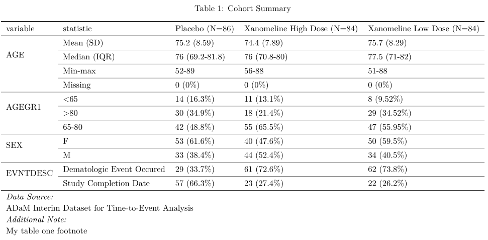

![[Questioning]](figures/lifecycle-questioning.svg) Wrapper function to produce a summary table (i.e. Table One).
Create and render a summary table for a dataset.
A typical example of a summary table are "table one", the first table in an applied medical research manuscript.
Wrapper function to produce a summary table (i.e. Table One).
Create and render a summary table for a dataset.
A typical example of a summary table are "table one", the first table in an applied medical research manuscript.
Calculate summary statistics and present them in a formatted table
Usage
tableone(
data,
title,
datasource,
footnote = "",
strata = NULL,
overall = TRUE,
summary_function = summarize_short,
...
)Arguments
- data
The dataframe or tibble to visualize
- title
Table title to include in the rendered table. Input is a text string.
- datasource
String specifying the datasource underlying the data set
- footnote
Table footnote to include in the rendered table. Input is a text string.
- strata
Character vector with column names to use for stratification in the summary table. Default: NULL , which indicates no stratification.
- overall
If TRUE, the summary statistics for the overall dataset are also calculated
- summary_function
A function defining summary statistics for numeric and categorical values Pre-implemented functions are summarize_long and summarize_short
- ...
Pass options to render_table
Example Output
tableone(engine = "gt")

tableone(engine = "DT")

tableone(engine = "kable")

tableone(engine = "kable", output_format = "latex")

Examples
# metadata for table
t1_title <- "Cohort Summary"
t1_ds <- "ADaM Interim Dataset for Time-to-Event Analysis"
t1_fn <- "My table one footnote"
## table by treatment - without overall and render with GT
tbl_gt <-
adtte %>%
dplyr::filter(SAFFL == "Y") %>%
dplyr::select(AGE, AGEGR1, SEX, EVNTDESC, TRTA) %>%
visR::tableone(
strata = "TRTA",
overall = FALSE,
title = t1_title,
datasource = t1_ds,
footnote = t1_fn,
engine = "gt"
)
## table by treatment - without overall and render with DT
tbl_DT <-
adtte %>%
dplyr::filter(SAFFL == "Y") %>%
dplyr::select(AGE, AGEGR1, SEX, EVNTDESC, TRTA) %>%
visR::tableone(
strata = "TRTA",
overall = FALSE,
title = t1_title,
datasource = t1_ds,
footnote = t1_fn,
engine = "DT"
)
## table by treatment - without overall and render with kable
tbl_kable_html <-
adtte %>%
dplyr::filter(SAFFL == "Y") %>%
dplyr::select(AGE, AGEGR1, SEX, EVNTDESC, TRTA) %>%
visR::tableone(
strata = "TRTA",
overall = FALSE,
title = t1_title,
datasource = t1_ds,
footnote = t1_fn,
engine = "kable"
)
## table by treatment - without overall and render with kable as
## a latex table format rather than html
tbl_kable_latex <-
adtte %>%
dplyr::filter(SAFFL == "Y") %>%
dplyr::select(AGE, AGEGR1, SEX, EVNTDESC, TRTA) %>%
visR::tableone(
strata = "TRTA",
overall = FALSE,
title = t1_title,
datasource = t1_ds,
footnote = t1_fn,
output_format = "latex",
engine = "kable"
)